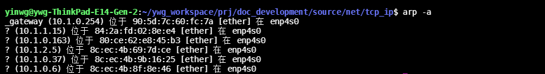
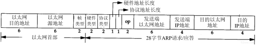
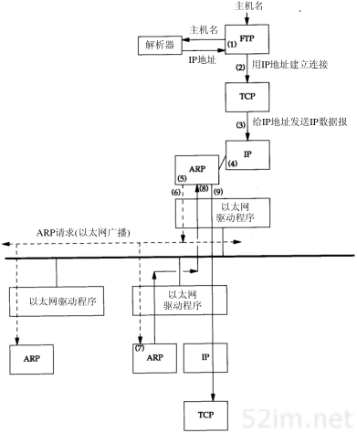

9.2.4. ARP地址解析协议
当以太主机把以太网数据帧发送到位于同一局域网的另一台主机时，是根据48Bit的以太网地址(mac地址)来确定目的接口的，设备驱动程序从不检查IP数据报中的目的IP地址
地址解析为这两种不同地址形式提供映射:32bit的IP地址和数据链路层使用的任何类型的地址。ARP为IP地址到对应的硬件地址之间提供动态映射。
9.2.4.1. ARP高速缓存
ARP高效运行的关键是由于每个主机上都有一个ARP高速缓存，这个高速缓存存放了最近IP地址和硬件地址之间的映射记录。高速缓存中每一项的生存时间一般为20分钟。
我们可以使用 arp -a 来检查arp高速缓存

9.2.4.2. ARP的分组格式
ARP请求和应答分组的格式如下

数据段 |
描述 |
以太网目的地址 |
以太网目的地址为全1的则表示是广播地址 |
以太网源地址 |
|
帧类型 |
ARP请求和应答此字段的值为0x0806 |
硬件类型 |
1表示以太网地址 |
协议类型 |
表示要映射的协议地址类型，0x0800表示IP地址 |
硬件地址长度 |
值为6 |
协议地址长度 |
值为4 |
操作字段 |
ARP请求(1)、ARP应答(2)、RARP请求(3)、RARP应答(4) |
发送端以太网地址 |
|
发送端IP |
|
目的以太网地址 |
|
目的IP |
对于ARP请求来说，除目的端硬件地址外的所有其他的字段都有填充值，当系统收到一份目的端为本机的ARP请求报文后，它就把硬件地址填进去，然后用两个目的端地址分别替换两个发送端地址，并把操作字段置为 2,然后将其发送出去
9.2.4.3. 示例
下面对ftp yinwg这个命令的执行过程进行分析, 当执行这条命令时会进行以下步骤
应用程序FTP客户端调用函数gethostbyname把主机名(yinwg)转换成32bit的IP地址，这个函数再DNS(域名系统)中称作解析器,这个过程使用DNS，或者在较小网络中使用一个静态主机文件(/etc/hosts)
FTP客户端请求TCP用第一步得到的IP建立连接
TCP发送一个连接请求分段到远端的主机，即用上述IP地址发送一份IP数据报
如果目的主机在本地网络上，那么IP数据报可以直接送到目的主机上。如果目的主机在一个远程网络上，那么就通过IP选路函数来确定位于本地网络上的下一站路由器地址，并让它转发IP数据报。
ARP将IP地址到对应的物理硬件地址进行翻译
ARP发送一份arp请求以太网数据帧到以太网上的每一台主机，这个过程称作广播。
目的主机的ARP层收到这份广播报文后，发送一个ARP应答。这个应答包含IP地址和对应的硬件地址
收到ARP应答后，IP数据报便可以传送了
发送IP数据报到目的主机
